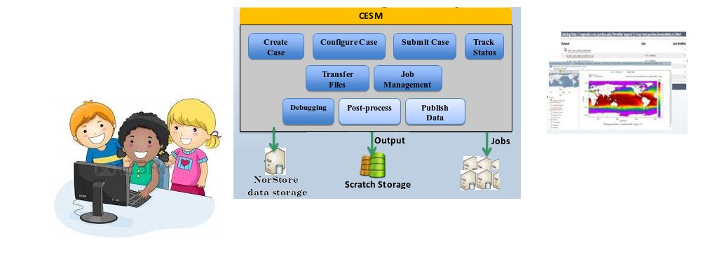

Practicals
Homepage
CESM model
Practicals
Results

GEF4530 practical - Day 1
Check set-up of the laptops
Computing and visualization infrastructure
Creating and Running a CAM test case
GEF4530 practical - Day 2
Check the 1 month test run
Store model outputs on norStore
Post-processing and Visualization
GEF4530 practical - Day 3
Introduce model experiments
Set-up model experiments
Run long run (14 months) experiments
Store model outputs on norStore
Post-processing and Visualiation
Archive on the norStore Archive
Clean norStore project area